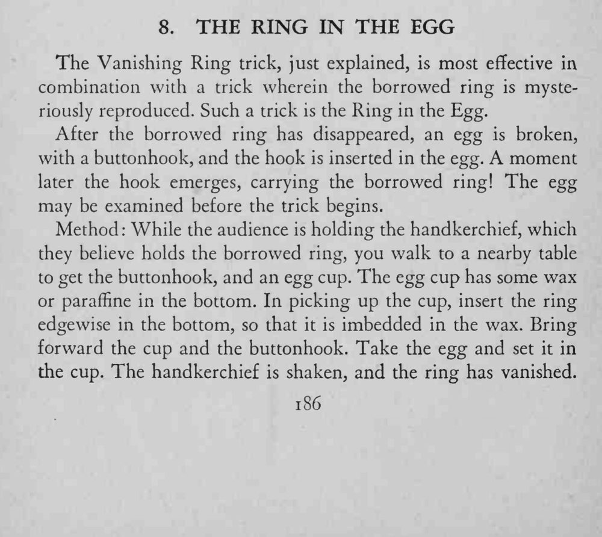
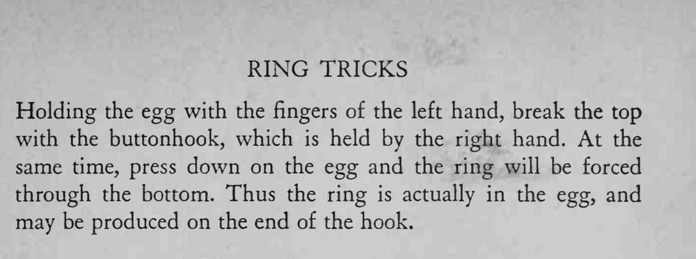

借来的戒指消失后，鸡蛋被钩子敲开，钩子探进蛋里，出来时钩上竟挂着那只借来的戒指。
敲蛋和压蛋要同时完成，蜡不能太硬，否则戒指挤不进去。


The Vanishing Ring trick, just explained, is most effective in combination with a trick wherein the borrowed ring is mysteriously reproduced. Such a trick is the Ring in the Egg. After the borrowed ring has disappeared, an egg is broken, with a buttonhook, and the hook is inserted in the egg. A moment later the hook emerges, carrying the borrowed ring! The egg may be examined before the trick begins. Method While the audience is holding the handkerchief, which they believe holds the borrowed ring, you walk to a nearby table to get the buttonhook, and an egg cup. The egg cup has some wax or paraffine in the bottom. In picking up the cup, insert the ring edgewise in the bottom, so that it is imbedded in the wax. Bring forward the cup and the buttonhook. Take the egg and set it in the cup. The handkerchief is shaken, and the ring has vanished. Holding the egg with the fingers of the left hand, break the top with the buttonhook, which is held by the right hand. At the same time, press down on the egg and the ring will be forced through the bottom. Thus the ring is actually in the egg, and may be produced on the end of the hook.